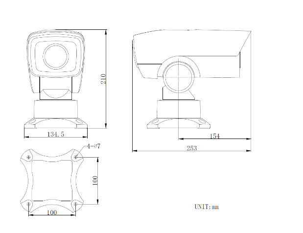

内置电动云台和-体化变焦重头， 施工便易，方便适性
支持三种智能资源切换:人脸抓拍。混合国杨检测(健模比对。全绍构化)
人检机拍:支持同时检测30年人验。支持人脸去课理。快建抓拍人脸，支持对造动人脸进行检测。银拍。评外。物选。输出量优的人脸探图，支持人验属性分析
混台日标检测(企结构化) : 支持人险+人体+车辆抓拍。对目标进行检测。评分，轴出最优机的图。支持人检+人体+车辆属性分析
混台日标检测健檀对比) : 支持人险+人体探拍，对目标进行检测。评分。输出量优照拍图。支持人险+人体属性分析和建模比对
司支持的题人险比对;创麦持最多什人脸库的管理; 0支持最多9万甄人验的导入; d)支持合计人整库的存储空间量大3CB,单甄人碰不想过00;的支持不同人险库不同时间布的;支持属名单比对成功复警输出; )支持人脸难美40德素以上的人险检测; h麦持人经续建比对 多种比对方式设置
由用场最
温台网络高清-体化云台的型理像机的种神特性使之司广泛皮用于需更大范国高清西质监控的场所，如:人行道。小区出入口。青街小巷。厦马线。潍行车道。 地铁出入口零场所。
订货型号
结构尺寸图
